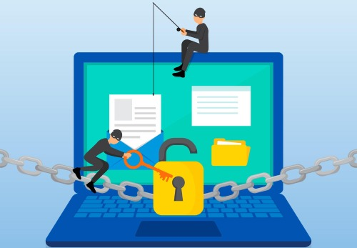
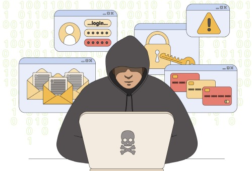

Can An SMTP Email Server Be Exploited For
Email Spoofing And Phishing?
Email Spoofing And Phishing?
Email is a widely used business communication channel, but it also carries significant cybersecurity risks. An SMTP (Simple Mail Transfer Protocol) server sends messages across networks. When misconfigured or inadequately secured, it can be exploited for email spoofing, phishing, and other cyberattacks. Understanding these threats and applying appropriate security measures can help organizations protect their email infrastructure, prevent unauthorized communications, and maintain customer trust.
How Does an SMTP Email Server Work?
SMTP is a communication protocol that transfers outgoing emails between email clients and servers. When someone sends an email, the SMTP server processes the message and routes it toward the recipient's mail server.
The Role of SMTP Authentication
SMTP authentication verifies the identity of users attempting to send emails through a server. Without proper authentication, attackers may exploit weaknesses to send unauthorized messages.
Secure SMTP configurations typically require credentials, encrypted connections, and appropriate access restrictions. These safeguards help prevent unauthorized users from abusing the server.

Why SMTP Security Matters
An insecure SMTP server can become a gateway for spam campaigns, phishing attacks, and fraudulent communications. Attackers may also exploit compromised accounts to send malicious messages thatappear legitimate to recipients.
Can SMTP Servers Be Exploited for Email Spoofing?
Yes. Email spoofing occurs when an attacker manipulates email headers or sender information to make a message appear to originate from a trusted individual, company, or domain.
Exploiting Misconfigured SMTP Servers
Some SMTP servers are configured as open relays, meaning they allow unauthorized users to send emails through them. Attackers can abuse these servers to distribute spam, phishing messages, and malware.
An open relay can damage an organization's reputation, cause its IP address to become blacklisted, and disrupt legitimate email delivery.
However, email spoofing does not always require compromising an SMTP server. Attackers can exploit weaknesses in email authentication or use external infrastructure to impersonate a domain.
Using Spoofed Emails for Phishing
Phishing attacks frequently rely on spoofed sender addresses to make fraudulent messages appear trustworthy. Attackers may impersonate executives, financial institutions, vendors, or IT departments.
These emails can encourage recipients to reveal passwords, transfer money, download malicious attachments, or visit fraudulent websites.
How SPF, DKIM, and DMARC Protect SMTP Email
Email authentication protocols help organizations identify unauthorized messages and reduce spoofing risks.
SPF: Sender Policy Framework
SPF specifies which mail servers are authorized to send emails on behalf of a domain. Receiving servers can check whether the sending IP address matches the domain's published SPF record.
Organizations should maintain accurate SPF records and avoid exceeding the DNS lookup limit.
DKIM: DomainKeys Identified Mail
DKIM adds a cryptographic signature to outgoing messages. Receiving servers use the sender's published public key to verify the signature and detect unauthorized modifications.
Proper DKIM configuration helps establish message authenticity and integrity.
DMARC: Domain-Based Message Authentication
DMARC connects SPF and DKIM authentication with domain alignment requirements. It also allows domain owners to specify how receiving servers should handle authentication failures.
Organizations can begin with a monitoring policy (p=none) before progressing to stricter policies such as quarantine or reject.

Best Practices for Securing SMTP Servers
Businesses should adopt multiple security measures to strengthen their email infrastructure.
Implement Strong Server Security
- Disable open relay functionality and require SMTP authentication.
- Use TLS encryption to protect email transmission.
- Apply software updates and patch known vulnerabilities.
- Restrict SMTP access using firewalls and appropriate permissions.
Monitor Email Authentication and Activity
Regularly review SMTP logs, authentication failures, unusual sending patterns, and DMARC reports. Tools such as AutoSPF, MXToolbox, and PowerDMARC can help organizations manage authentication records and identify configuration problems.
Educate Employees About Email Threats
Technical protections are most effective when combined with employee awareness. Organizations should provide regular cybersecurity training to help employees recognize suspicious sender addresses, unexpected attachments, urgent payment requests, and phishing links. Encouraging users to verify unusual requests through separate communication channels can prevent fraudulent transactions and credential theft. Establishing clear reporting procedures also helps security teams investigate suspicious emails quickly and reduce the impact of potential attacks. Access detailed insights on this topic.